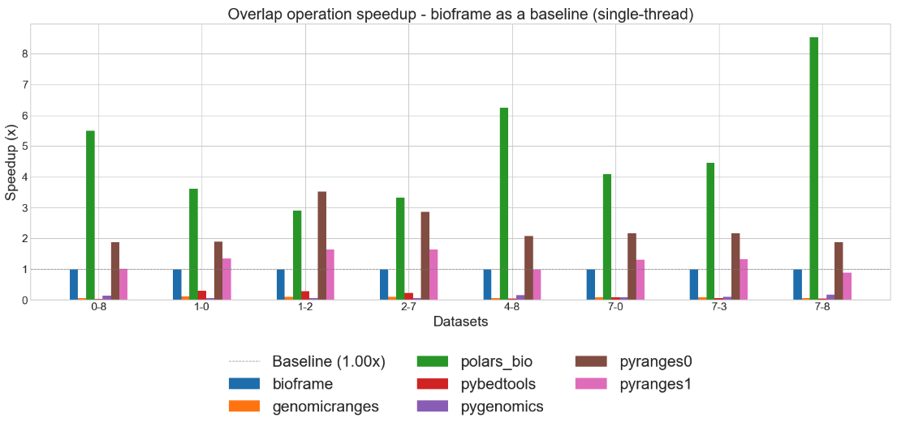
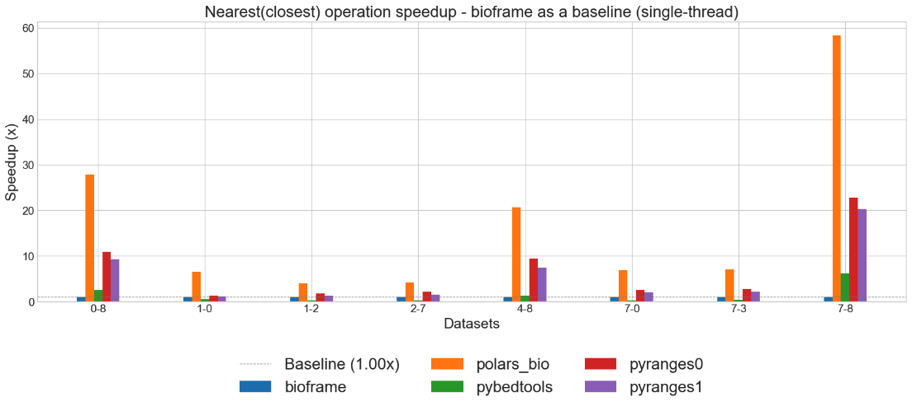
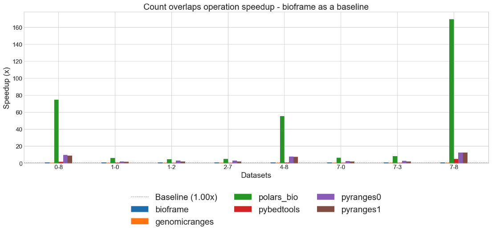
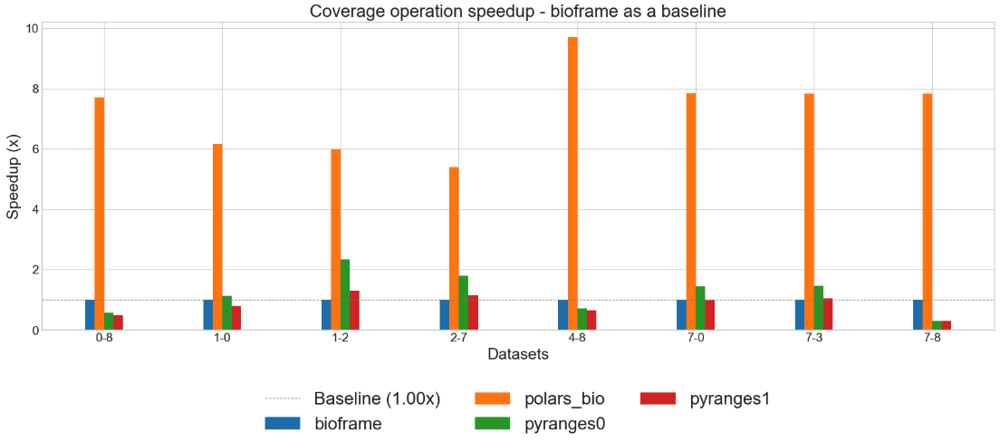
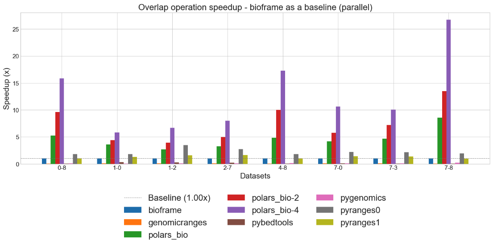
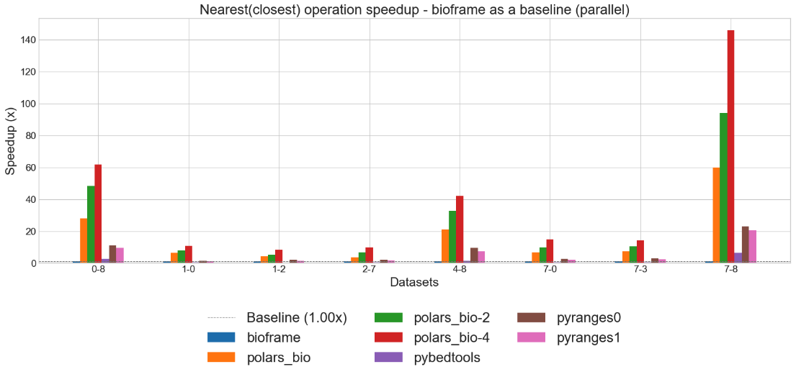
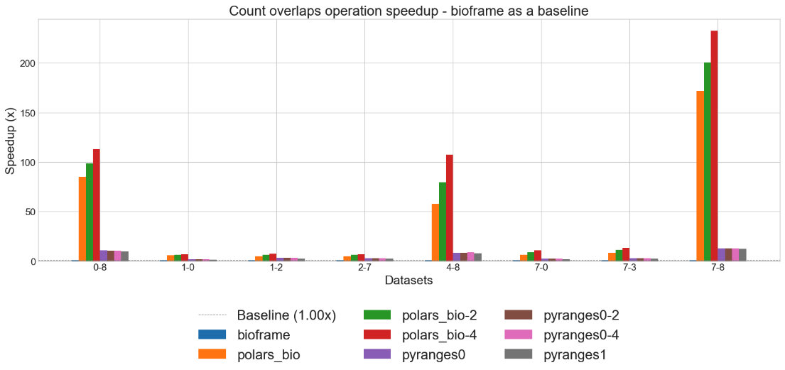
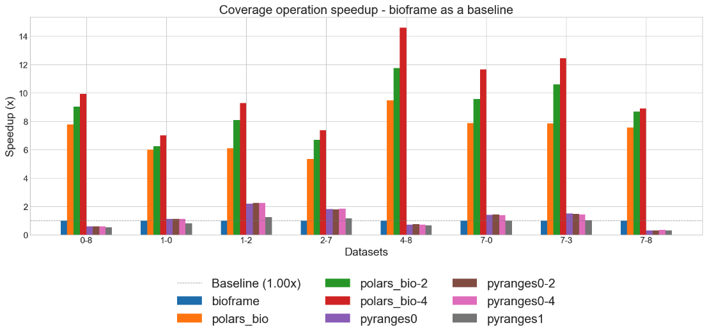

Next-gen Python DataFrame operations for genomics!
polars-bio is a  blazing fast Python DataFrame library for genomics🧬 built on top of Apache DataFusion, Apache Arrow
and polars.
It is designed to be easy to use, fast and memory efficient with a focus on genomics data.
blazing fast Python DataFrame library for genomics🧬 built on top of Apache DataFusion, Apache Arrow
and polars.
It is designed to be easy to use, fast and memory efficient with a focus on genomics data.
Key Features
- optimized for peformance and memory efficiency for large-scale genomics datasets analyses both when reading input data and performing operations
- popular genomics operations with a DataFrame API (both Pandas and polars)
- SQL-powered bioinformatic data querying or manipulation/pre-processing
- native parallel engine powered by Apache DataFusion and sequila-native
- out-of-core/streaming processing (for data too large to fit into a computer's main memory) with Apache DataFusion and polars
- support for federated and streamed reading data from cloud storages (e.g. S3, GCS) with Apache OpenDAL enabling processing large-scale genomics data without materializing in memory
- zero-copy data exchange with Apache Arrow
- bioinformatics file formats with noodles and exon
- fast overlap operations with COITrees: Cache Oblivious Interval Trees
- pre-built wheel packages for Linux, Windows and MacOS (arm64 and x86_64) available on PyPI
See quick start for the installation options.
Citing
If you use polars-bio in your work, please cite:
@article {Wiewiorka2025.03.21.644629,
author = {Wiewiorka, Marek and Khamutou, Pavel and Zbysinski, Marek and Gambin, Tomasz},
title = {polars-bio - fast, scalable and out-of-core operations on large genomic interval datasets},
elocation-id = {2025.03.21.644629},
year = {2025},
doi = {10.1101/2025.03.21.644629},
publisher = {Cold Spring Harbor Laboratory},
URL = {https://www.biorxiv.org/content/early/2025/03/25/2025.03.21.644629},
eprint = {https://www.biorxiv.org/content/early/2025/03/25/2025.03.21.644629.full.pdf},
journal = {bioRxiv}
}
Example
Discovering genomics data in VCF files
import polars_bio as pb
import polars as pl
pl.Config(fmt_str_lengths=1000, tbl_width_chars=1000)
pl.Config.set_tbl_cols(100)
vcf_1 = "gs://gcp-public-data--gnomad/release/4.1/genome_sv/gnomad.v4.1.sv.sites.vcf.gz"
pb.describe_vcf(vcf_1).filter(pl.col("description").str.contains(r"Latino.* allele frequency"))
shape: (3, 3)
┌───────────┬───────┬────────────────────────────────────────────────────┐
│ name ┆ type ┆ description │
│ --- ┆ --- ┆ --- │
│ str ┆ str ┆ str │
╞═══════════╪═══════╪════════════════════════════════════════════════════╡
│ AF_amr ┆ Float ┆ Latino allele frequency (biallelic sites only). │
│ AF_amr_XY ┆ Float ┆ Latino XY allele frequency (biallelic sites only). │
│ AF_amr_XX ┆ Float ┆ Latino XX allele frequency (biallelic sites only). │
└───────────┴───────┴────────────────────────────────────────────────────┘
Interactive querying of genomics data
pb.register_vcf(vcf_1, "gnomad",
info_fields=['AF_amr'])
query = """
SELECT
chrom,
start,
end,
alt,
array_element(af_amr,1) AS af_amr
FROM gnomad
WHERE
filter = 'HIGH_NCR'
AND
alt = '<DUP>'
"""
pb.sql(f"{query} LIMIT 3").collect()
shape: (3, 5)
┌───────┬────────┬────────┬───────┬──────────┐
│ chrom ┆ start ┆ end ┆ alt ┆ af_amr │
│ --- ┆ --- ┆ --- ┆ --- ┆ --- │
│ str ┆ u32 ┆ u32 ┆ str ┆ f32 │
╞═══════╪════════╪════════╪═══════╪══════════╡
│ chr1 ┆ 10000 ┆ 295666 ┆ <DUP> ┆ 0.000293 │
│ chr1 ┆ 138000 ┆ 144000 ┆ <DUP> ┆ 0.000166 │
│ chr1 ┆ 160500 ┆ 172100 ┆ <DUP> ┆ 0.002639 │
└───────┴────────┴────────┴───────┴──────────┘
Creating a view and overlapping with a VCF file from another source
pb.register_view("v_gnomad", query)
pb.overlap("v_gnomad", "s3://gnomad-public-us-east-1/release/4.1/vcf/exomes/gnomad.exomes.v4.1.sites.chr1.vcf.bgz" , suffixes=("_1", "_2")).collect()
3rows [00:39, 13.20s/rows]
shape: (3, 13)
┌─────────┬─────────┬────────┬─────────┬───┬───────┬───────┬────────┬─────────────┐
│ chrom_1 ┆ start_1 ┆ end_1 ┆ chrom_2 ┆ … ┆ ref_2 ┆ alt_2 ┆ qual_2 ┆ filter_2 │
│ --- ┆ --- ┆ --- ┆ --- ┆ ┆ --- ┆ --- ┆ --- ┆ --- │
│ str ┆ u32 ┆ u32 ┆ str ┆ ┆ str ┆ str ┆ f64 ┆ str │
╞═════════╪═════════╪════════╪═════════╪═══╪═══════╪═══════╪════════╪═════════════╡
│ chr1 ┆ 10000 ┆ 295666 ┆ chr1 ┆ … ┆ T ┆ C ┆ 0.0 ┆ AC0;AS_VQSR │
│ chr1 ┆ 11000 ┆ 51000 ┆ chr1 ┆ … ┆ T ┆ C ┆ 0.0 ┆ AC0;AS_VQSR │
│ chr1 ┆ 10000 ┆ 295666 ┆ chr1 ┆ … ┆ G ┆ A ┆ 0.0 ┆ AC0;AS_VQSR │
└─────────┴─────────┴────────┴─────────┴───┴───────┴───────┴────────┴─────────────┘
Note
The above example demonstrates how to use polars-bio to query and overlap genomics data from different sources over the network. The performance of the operations can be impacted by the available network throughput and the size of the data being processed.
pb.overlap("/tmp/gnomad.v4.1.sv.sites.vcf.gz", "/tmp/gnomad.exomes.v4.1.sites.chr1.vcf.bgz").limit(3).collect()
3rows [00:10, 3.49s/rows]
shape: (3, 16)
┌─────────┬─────────┬────────┬─────────┬───┬───────┬───────┬────────┬─────────────┐
│ chrom_1 ┆ start_1 ┆ end_1 ┆ chrom_2 ┆ … ┆ ref_2 ┆ alt_2 ┆ qual_2 ┆ filter_2 │
│ --- ┆ --- ┆ --- ┆ --- ┆ ┆ --- ┆ --- ┆ --- ┆ --- │
│ str ┆ u32 ┆ u32 ┆ str ┆ ┆ str ┆ str ┆ f64 ┆ str │
╞═════════╪═════════╪════════╪═════════╪═══╪═══════╪═══════╪════════╪═════════════╡
│ chr1 ┆ 10000 ┆ 295666 ┆ chr1 ┆ … ┆ T ┆ C ┆ 0.0 ┆ AC0;AS_VQSR │
│ chr1 ┆ 11000 ┆ 51000 ┆ chr1 ┆ … ┆ T ┆ C ┆ 0.0 ┆ AC0;AS_VQSR │
│ chr1 ┆ 12000 ┆ 32000 ┆ chr1 ┆ … ┆ G ┆ A ┆ 0.0 ┆ AC0;AS_VQSR │
└─────────┴─────────┴────────┴─────────┴───┴───────┴───────┴────────┴─────────────┘
Register a table from a Polars DataFrame
You can register a table from a Polars DataFrame, e.g. for creating a custom annotation table.
df = pl.DataFrame({
"chrom": ["chr1", "chr1"],
"start": [11993, 12102],
"end": [11996, 12200],
"annotation": ["ann1", "ann2"]
})
pb.from_polars("test_annotation", df)
pb.sql("SELECT * FROM test_annotation").collect()
shape: (2, 4)
┌───────┬───────┬───────┬────────────┐
│ chrom ┆ start ┆ end ┆ annotation │
│ --- ┆ --- ┆ --- ┆ --- │
│ str ┆ i64 ┆ i64 ┆ str │
╞═══════╪═══════╪═══════╪════════════╡
│ chr1 ┆ 11993 ┆ 11996 ┆ ann1 │
│ chr1 ┆ 12102 ┆ 12200 ┆ ann2 │
└───────┴───────┴───────┴────────────┘
pb.overlap("test_annotation", "s3://gnomad-public-us-east-1/release/4.1/vcf/exomes/gnomad.exomes.v4.1.sites.chr1.vcf.bgz").limit(3).collect()
3rows [00:02, 1.40rows/s]
shape: (3, 12)
┌─────────┬─────────┬───────┬─────────┬─────────┬───────┬──────────────┬──────────────┬───────┬───────┬────────┬─────────────┐
│ chrom_1 ┆ start_1 ┆ end_1 ┆ chrom_2 ┆ start_2 ┆ end_2 ┆ annotation_1 ┆ id_2 ┆ ref_2 ┆ alt_2 ┆ qual_2 ┆ filter_2 │
│ --- ┆ --- ┆ --- ┆ --- ┆ --- ┆ --- ┆ --- ┆ --- ┆ --- ┆ --- ┆ --- ┆ --- │
│ str ┆ i64 ┆ i64 ┆ str ┆ u32 ┆ u32 ┆ str ┆ str ┆ str ┆ str ┆ f64 ┆ str │
╞═════════╪═════════╪═══════╪═════════╪═════════╪═══════╪══════════════╪══════════════╪═══════╪═══════╪════════╪═════════════╡
│ chr1 ┆ 11993 ┆ 11996 ┆ chr1 ┆ 11994 ┆ 11994 ┆ ann1 ┆ ┆ T ┆ C ┆ 0.0 ┆ AC0;AS_VQSR │
│ chr1 ┆ 12102 ┆ 12200 ┆ chr1 ┆ 12106 ┆ 12106 ┆ ann2 ┆ ┆ T ┆ G ┆ 0.0 ┆ AC0;AS_VQSR │
│ chr1 ┆ 12102 ┆ 12200 ┆ chr1 ┆ 12138 ┆ 12138 ┆ ann2 ┆ rs1553119361 ┆ C ┆ A ┆ 0.0 ┆ AS_VQSR │
└─────────┴─────────┴───────┴─────────┴─────────┴───────┴──────────────┴──────────────┴───────┴───────┴────────┴─────────────┘
Parallel file readers
The performance when reading data from local files is significantly better than reading data over the network. If you are interested in the performance of the operations, you can additionally enable multithreaded reading of the data.
1 thread
pb.register_vcf("/tmp/gnomad.v4.1.sv.sites.vcf.gz", "gnomad_site_local", thread_num=1)
pb.sql("select * from gnomad_site_local").collect().count()
2154486rows [00:10, 204011.57rows/s]
shape: (1, 8)
┌─────────┬─────────┬─────────┬─────────┬─────────┬─────────┬─────────┬─────────┐
│ chrom ┆ start ┆ end ┆ id ┆ ref ┆ alt ┆ qual ┆ filter │
│ --- ┆ --- ┆ --- ┆ --- ┆ --- ┆ --- ┆ --- ┆ --- │
│ u32 ┆ u32 ┆ u32 ┆ u32 ┆ u32 ┆ u32 ┆ u32 ┆ u32 │
╞═════════╪═════════╪═════════╪═════════╪═════════╪═════════╪═════════╪═════════╡
│ 2154486 ┆ 2154486 ┆ 2154486 ┆ 2154486 ┆ 2154486 ┆ 2154486 ┆ 2154486 ┆ 2154486 │
└─────────┴─────────┴─────────┴─────────┴─────────┴─────────┴─────────┴─────────┘
2 threads
pb.register_vcf("/tmp/gnomad.v4.1.sv.sites.vcf.gz", "gnomad_site_local", thread_num=2)
pb.sql("select * from gnomad_site_local").collect().count()
2154486rows [00:06, 347012.53rows/s]
shape: (1, 8)
┌─────────┬─────────┬─────────┬─────────┬─────────┬─────────┬─────────┬─────────┐
│ chrom ┆ start ┆ end ┆ id ┆ ref ┆ alt ┆ qual ┆ filter │
│ --- ┆ --- ┆ --- ┆ --- ┆ --- ┆ --- ┆ --- ┆ --- │
│ u32 ┆ u32 ┆ u32 ┆ u32 ┆ u32 ┆ u32 ┆ u32 ┆ u32 │
╞═════════╪═════════╪═════════╪═════════╪═════════╪═════════╪═════════╪═════════╡
│ 2154486 ┆ 2154486 ┆ 2154486 ┆ 2154486 ┆ 2154486 ┆ 2154486 ┆ 2154486 ┆ 2154486 │
└─────────┴─────────┴─────────┴─────────┴─────────┴─────────┴─────────┴─────────┘
4 threads
pb.register_vcf("/tmp/gnomad.v4.1.sv.sites.vcf.gz", "gnomad_site_local", thread_num=4)
pb.sql("select * from gnomad_site_local").collect().count()
2154486rows [00:03, 639138.47rows/s]
shape: (1, 8)
┌─────────┬─────────┬─────────┬─────────┬─────────┬─────────┬─────────┬─────────┐
│ chrom ┆ start ┆ end ┆ id ┆ ref ┆ alt ┆ qual ┆ filter │
│ --- ┆ --- ┆ --- ┆ --- ┆ --- ┆ --- ┆ --- ┆ --- │
│ u32 ┆ u32 ┆ u32 ┆ u32 ┆ u32 ┆ u32 ┆ u32 ┆ u32 │
╞═════════╪═════════╪═════════╪═════════╪═════════╪═════════╪═════════╪═════════╡
│ 2154486 ┆ 2154486 ┆ 2154486 ┆ 2154486 ┆ 2154486 ┆ 2154486 ┆ 2154486 ┆ 2154486 │
└─────────┴─────────┴─────────┴─────────┴─────────┴─────────┴─────────┴─────────┘
6 threads
pb.register_vcf("/tmp/gnomad.v4.1.sv.sites.vcf.gz", "gnomad_site_local", thread_num=4)
pb.sql("select * from gnomad_site_local").collect().count()
2154486rows [00:02, 780228.99rows/s]
shape: (1, 8)
┌─────────┬─────────┬─────────┬─────────┬─────────┬─────────┬─────────┬─────────┐
│ chrom ┆ start ┆ end ┆ id ┆ ref ┆ alt ┆ qual ┆ filter │
│ --- ┆ --- ┆ --- ┆ --- ┆ --- ┆ --- ┆ --- ┆ --- │
│ u32 ┆ u32 ┆ u32 ┆ u32 ┆ u32 ┆ u32 ┆ u32 ┆ u32 │
╞═════════╪═════════╪═════════╪═════════╪═════════╪═════════╪═════════╪═════════╡
│ 2154486 ┆ 2154486 ┆ 2154486 ┆ 2154486 ┆ 2154486 ┆ 2154486 ┆ 2154486 ┆ 2154486 │
└─────────┴─────────┴─────────┴─────────┴─────────┴─────────┴─────────┴─────────┘
You can easily see the performance improvement when using multi-threading: throughput: ~205k rows/s 350k rows/s vs ~640k rows/s vs ~780k rows/s and processing time reduction: ~10s vs ~6s vs ~3s vs ~2s.
Parallel operations
Let's prepare the data for the parallel operations.
Tip
As you can see in the previous examples you can efficiently read and process data in bioinformatic format using polars-bio. However, if you really would like to get the best performance you can use big-data ready format, such as Parquet.
pb.register_vcf("/tmp/gnomad.v4.1.sv.sites.vcf.gz", "gnomad_site_local", thread_num=4)
pb.sql("SELECT chrom, start, end FROM gnomad_site_local", streaming=True).sink_parquet("/tmp/gnomad.v4.1.sv.sites.parquet")
pb.register_vcf("/tmp/gnomad.exomes.v4.1.sites.chr1.vcf.bgz", "gnomad_exomes_local", thread_num=4)
pb.sql("SELECT chrom, start, end FROM gnomad_exomes_local", streaming=True).sink_parquet("/tmp/gnomad.exomes.v4.1.sites.chr1.parquet")
streaming=True parameter to enable the streaming mode. This mode is useful when you want to process data that is too large to fit into memory.
See streaming for more details.
import polars as pl
pl.scan_parquet("/tmp/gnomad.v4.1.sv.sites.parquet").collect().count()
shape: (1, 3)
┌─────────┬─────────┬─────────┐
│ chrom ┆ start ┆ end │
│ --- ┆ --- ┆ --- │
│ u32 ┆ u32 ┆ u32 │
╞═════════╪═════════╪═════════╡
│ 2154486 ┆ 2154486 ┆ 2154486 │
└─────────┴─────────┴─────────┘
>>> pl.scan_parquet("/tmp/gnomad.exomes.v4.1.sites.chr1.parquet").collect().count()
shape: (1, 3)
┌──────────┬──────────┬──────────┐
│ chrom ┆ start ┆ end │
│ --- ┆ --- ┆ --- │
│ u32 ┆ u32 ┆ u32 │
╞══════════╪══════════╪══════════╡
│ 17671166 ┆ 17671166 ┆ 17671166 │
└──────────┴──────────┴──────────┘
1 thread
python -m timeit -n 3 -r 1 -s 'import polars_bio as pb; pb.set_option("datafusion.execution.target_partitions", "1")' \
'pb.overlap("/tmp/gnomad.v4.1.sv.sites.parquet", "/tmp/gnomad.exomes.v4.1.sites.chr1.parquet", output_type="datafusion.DataFrame").count()'
3 loops, best of 1: 33.3 sec per loop
2 threads
python -m timeit -n 3 -r 1 -s 'import polars_bio as pb; pb.set_option("datafusion.execution.target_partitions", "2")' \
'pb.overlap("/tmp/gnomad.v4.1.sv.sites.parquet", "/tmp/gnomad.exomes.v4.1.sites.chr1.parquet", output_type="datafusion.DataFrame").count()'
3 loops, best of 1: 20.8 sec per loop
4 threads
python -m timeit -n 3 -r 1 -s 'import polars_bio as pb; pb.set_option("datafusion.execution.target_partitions", "4")' \
'pb.overlap("/tmp/gnomad.v4.1.sv.sites.parquet", "/tmp/gnomad.exomes.v4.1.sites.chr1.parquet", output_type="datafusion.DataFrame").count()'
3 loops, best of 1: 12.5 sec per loop
6 threads
python -m timeit -n 3 -r 1 -s 'import polars_bio as pb; pb.set_option("datafusion.execution.target_partitions", "6")' \
'pb.overlap("/tmp/gnomad.v4.1.sv.sites.parquet", "/tmp/gnomad.exomes.v4.1.sites.chr1.parquet", output_type="datafusion.DataFrame").count()'
3 loops, best of 1: 8.62 sec per loop
12 threads
python -m timeit -n 3 -r 1 -s 'import polars_bio as pb; pb.set_option("datafusion.execution.target_partitions", "12")' \
'pb.overlap("/tmp/gnomad.v4.1.sv.sites.parquet", "/tmp/gnomad.exomes.v4.1.sites.chr1.parquet", output_type="datafusion.DataFrame").count()'
3 loops, best of 1: 4.57 sec per loop
Finally, let's save the result to a Parquet file and check the results.
pb.overlap("/tmp/gnomad.v4.1.sv.sites.parquet", "/tmp/gnomad.exomes.v4.1.sites.chr1.parquet", output_type="datafusion.DataFrame").write_parquet("/tmp/overlap.parquet")
pl.scan_parquet("/tmp/overlap.parquet").collect().count()
shape: (1, 6)
┌────────────┬────────────┬────────────┬────────────┬────────────┬────────────┐
│ chrom_1 ┆ start_1 ┆ end_1 ┆ chrom_2 ┆ start_2 ┆ end_2 │
│ --- ┆ --- ┆ --- ┆ --- ┆ --- ┆ --- │
│ u32 ┆ u32 ┆ u32 ┆ u32 ┆ u32 ┆ u32 │
╞════════════╪════════════╪════════════╪════════════╪════════════╪════════════╡
│ 2629727337 ┆ 2629727337 ┆ 2629727337 ┆ 2629727337 ┆ 2629727337 ┆ 2629727337 │
└────────────┴────────────┴────────────┴────────────┴────────────┴────────────┘
See supported operations for more details.
Performance benchmarks
Single-thread 🏃




Parallel 🏃🏃



